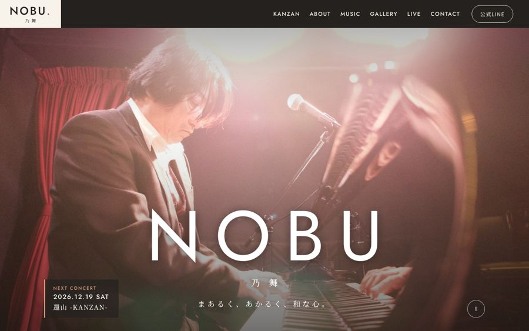
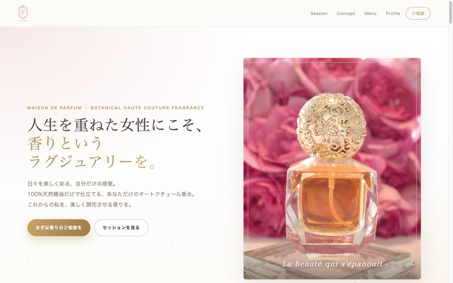
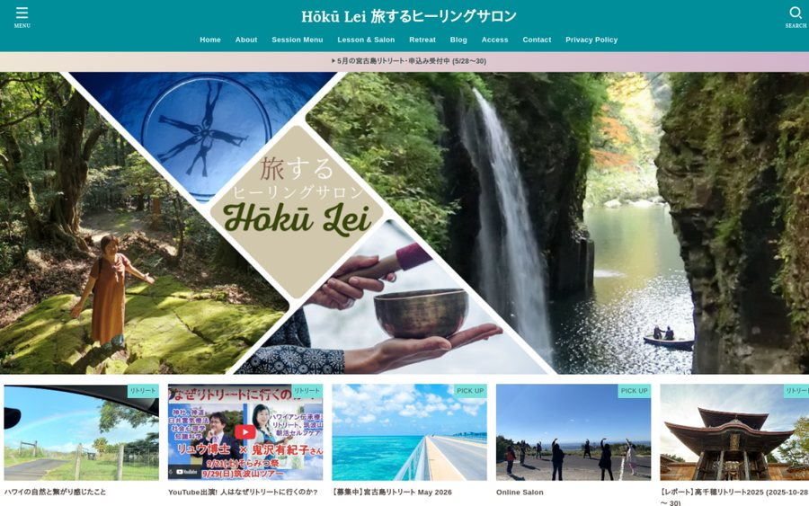
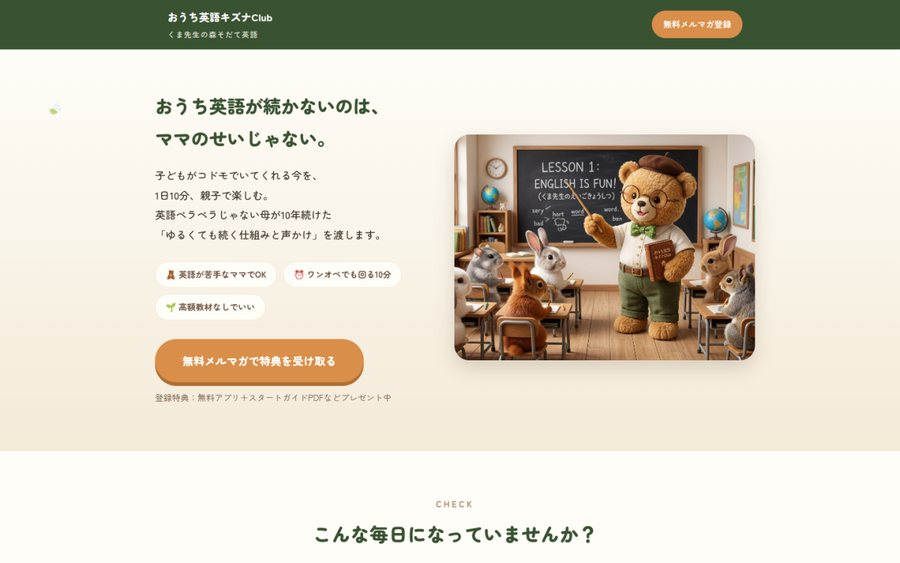

作曲家・ピアニスト／サイト制作・公式LINE構築・Instagram／YouTube整備
乃舞 -NOBU- 公式サイト・公式LINE
「自然や花鳥風月を、まあるく、ゆるく」というご本人の温度を大切に、音楽とコンサートの案内が伝わるサイトと、ファンの方へお知らせが届く公式LINEを整え、InstagramとYouTubeの見せ方もそろえました。
サイトを見る →言葉と発信の伴走
話すうちに、あなたの「伝えたいこと」が言葉になる。
サービスへの想いはある。経験も、それなりに積み重ねてきた。
それなのに、いざ言葉にしようとすると手が止まる。
ひとつでも当てはまるなら、いきなり「もっと発信しよう」と頑張る前に、一度、自分の中を整理してみてもいい時期です。
発信がまとまらないのは、センスや努力が足りないからではありません。
材料が多すぎて、まだ整理されていないだけです。
自分の強みは、自分ひとりではなかなか見えません。話してみる。書き出してみる。外から問いかけられる。そうしているうちに、少しずつ輪郭が見えてきます。
そして、軸になる言葉がひとつ決まると、プロフィールもSNSもWebサイトも、同じ軸でそろえられるようになります。発信は、そこから先がぐっと楽になります。
対話から、Webまで。一人で、通しで伴走します。
まずは、じっくりお話を伺います。これまでの経験、大切にしていること、なぜ今の仕事をしているのか、どんな方の役に立ちたいのか。うまく説明できなくても大丈夫です。
お話の中に出てきたことを、ご自身の手でノートに書き出して並べていきます。一見バラバラに見えることも、並べてみると、つながりが見えてきます。
「だから私は、これを届けたい」という軸を見つけて、誰に・何を・どんな言葉で伝えるのかを決めていきます。
見つかった言葉を、プロフィール、SNSの発信、サービスの見せ方、Webサイトへ。必要なら、公式LINEやメールの仕組みまで整えます。
誰かになりきるためのブランディングではなく、あなたがすでに持っている経験や魅力が、きちんと相手に伝わる状態をつくります。
製作者側の好みやセンスではなく、こちらのブランディングをベースとしたアドバイスをもらえるのがありがたかったです。私のイメージを提案してくださいました。それがとても良い感じでした。前向きで素敵な女性で、専門性も高い。安心してお任せできました。
忙しくてなかなか原稿を書く時間が取れませんでしたが、丁寧なヒアリングをしていただき、思い通りのサイトが完成しました。素敵に表現してくださり、満足しています。
ヒアリングから、言葉・デザイン・仕組みまで、まるごとお手伝いしたものです。

作曲家・ピアニスト／サイト制作・公式LINE構築・Instagram／YouTube整備
「自然や花鳥風月を、まあるく、ゆるく」というご本人の温度を大切に、音楽とコンサートの案内が伝わるサイトと、ファンの方へお知らせが届く公式LINEを整え、InstagramとYouTubeの見せ方もそろえました。
サイトを見る →
サイト制作
100%天然精油のオートクチュール香水サロン。ブランドの上質な世界観がそのまま伝わるよう、構成から文章・デザインまでまるごと制作しました。
サイトを見る →
サイト制作
忙しくて原稿を書く時間が取れない、というご相談から。ヒアリングをもとに、文章もこちらでまとめました。
サイトを見る →
自社ブランド
私自身が運営している発信ブランドです。コンセプト設計から、本の出版、メルマガの導線まで、一気通貫で形にしています。
サイトを見る →益田千穂Harmony Design
Webと関わって、約30年になります。証券業界の上場企業で、広報部門のウェブ担当として15年。Webサイトや情報発信、SNSの運用に携わってきました。セールスライティングとマーケティングは、上野健一郎氏に1年間直接師事して学びました。コーチングも学んでいます。
仕事と並行して、フルタイムで働きながら一人息子を育ててきました。子育てで続けてきたおうち英語は、2026年10月に本になりました。
「話していると頭の中が整理される」「自分では気づかなかった視点が見つかった」。そう言っていただくことが増えて、気づいたことがあります。私はWebサイトを作ること以上に、その人の中にある想いや経験を一緒に整理して、伝わる形にしていくことが好きなのだと思います。Webも、SNSも、文章も、そのための手段です。
はい、大丈夫です。お話を伺いながら、私が言葉にまとめます。「書くのが苦手」という方にこそ喜ばれています。
大丈夫です。順番どおりに話せなくてもかまいません。私から問いかけながら、一緒に整理していきます。
はい。どこから始めるかを決めるところから、一緒に考えます。
はい。Zoomでお話しいただければ進められます。操作が必要なときは、画面を共有しながらご一緒します。
いいえ。お手持ちのノートで大丈夫です。セッションでは、話しながらご自身の手で書き出していただきます。自分の手で書いた言葉は、あとから読み返しても自分のものとして残ります。
うまく説明できなくても大丈夫です。
まだ言葉になっていない状態から、一緒に整理していきます。